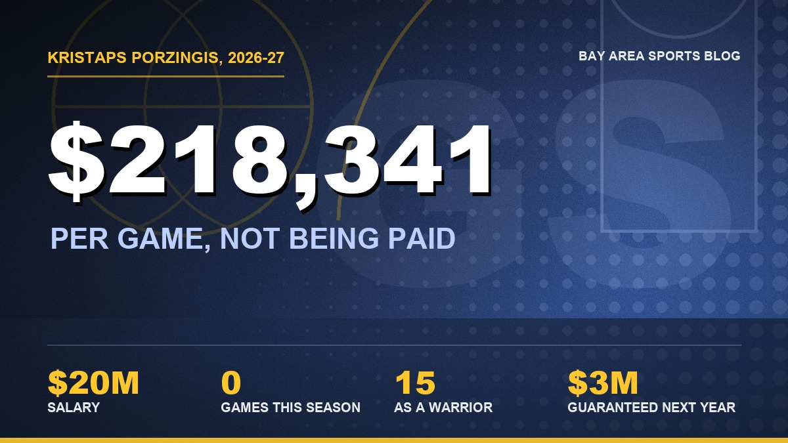

The Warriors Stopped Paying Kristaps Porzingis, and I Think He's Done
He hasn't played a game this season, he's leaning toward walking away, and the team has stopped cutting his checks. Fifteen games. That's what we got.

I was stopped dead on the 101 just past Cesar Chavez on Wednesday when my brother sent me one line. "They stopped paying Porzingis." No punctuation after it, no follow up, nothing. I read the rest of it at about four miles an hour, and the traffic turned out to be the nicest part of my afternoon.
The Warriors aren't paying Kristaps Porzingis. Not one check out of the $20 million he's supposed to make this season, because the team's position is that he's not rendering services. That's the actual phrase. The other half of the news is the part that got me: he's leaning toward ending his career. He's 31.
Nothing's been announced, so nobody should be writing the obituary yet. I've been doing this long enough to know what it sounds like, though, and I don't think we ever see him in a Warriors uniform again. I'm not sure anybody sees him in any uniform again.
Fifteen games.
That's the whole thing. Fifteen games last spring, 16.1 points, 5.3 rebounds, 31 percent from three, and then a long, weird silence. We sent Jonathan Kuminga and Buddy Hield to Atlanta for this at the deadline. We brought him back over the summer for two years and $40 million. The last time I watched the man play basketball, it was April.
I keep trying to be mad at him and I can't get there
Believe me, I've tried. He called Mike Dunleavy on the eve of training camp to say he wasn't coming, and Steve Kerr said they got caught off guard. No Hawaii. No preseason. On October 14 the team said he was out indefinitely with a "private health related issue" but that he'd be around the guys, and I remember thinking okay, at least he'll be on the bench in a hoodie. About a week later the same team said, "we are not anticipating Kristaps being around the team in the immediate future." Then a picture of him getting his teeth done in Mallorca came across my phone and I said some things to my kitchen that I'm not proud of.
I know. A sick guy's allowed to go to the dentist.
And I do think he's sick, which is what makes this so miserable. This goes back to a virus in Boston two seasons ago. He's said doctors there told him it was POTS, the condition that leaves you dizzy and wiped out, and it's cost him time with the Celtics, the Hawks and us, although nobody on our side has ever confirmed that's what's going on right now. He put it this way in October: "It has definitely been frustrating dealing with some health stuff that you can't exactly pinpoint, on top of injuries throughout my career."
Can't exactly pinpoint. Think about that for a second. Your entire living is running up and down a floor, and nobody can tell you why you feel the way you feel.
What really tells me this is over is that he isn't fighting it. They're holding back his money and he's not disputing it, and the union's apparently fine with that too. The last big one of these I can remember was Ben Simmons in Philly, when the Sixers sat on close to $20 million in game checks, and that one got ugly fast. Nobody's making a phone call here. He's listed as "not with team" now, not as sick, and a guy who planned on playing again doesn't let a paycheck walk out the door without a word. They still don't seem to agree behind the scenes on what's keeping him off the floor, and honestly, that might be the saddest detail of all.

The checks stopped. The cap hit didn't.
If you're thinking this at least helps the team, I've got bad news, because I thought it too for about ten minutes. It's $218,341 a game. We're eight games in, so call it $1.75 million that stays with Joe Lacob. Good for Joe. It doesn't get us one rebound, because the full $20 million still counts against our cap. We're $20.4 million over the tax and about $300,000 short of the second apron, and we're hard capped there. We can't exactly go shopping for a center with $300,000.
Retirement doesn't save us either, which still makes me want to throw something. If he hangs it up under contract, he gives up the money and the contract stays on our books anyway. To get it off, an independent panel of doctors has to find that his condition forced him out, and we can't even ask until a full year after his last game. That's next spring at the earliest. The window to stretch him closed on August 31. Waive him and we still owe him. Voiding the deal isn't something they're considering right now.
So the plan's a trade, by February 11, and the front office is still actively working it. They already called Milwaukee. I'll give Dunleavy one thing, since only $3 million of next year's $20 million is guaranteed, and that's the single smartest line anybody wrote in this whole mess. It still doesn't make him easy to move. Most of the league's going to look at that contract as a negative, so we may have to attach something just to get a team to take it, and we can't take back more salary than we send out. Imagine paying somebody to take the guy you traded Kuminga for.
Mike, I've got questions
I said I can't be mad at Porzingis. I didn't say anything about the front office.
We knew. That's what I keep coming back to. This wasn't some freak thing that showed up in September. The man had been missing time with this illness across three teams, and we looked at that and said yes, this is who we're building the middle of the floor around, at the exact moment Steph Curry's got maybe a couple of these years left. Steph's 38 and averaging 30. You don't get those nights back. Meanwhile Kuminga's starting in Minnesota, playing 31 minutes a night and hitting 44 percent of his threes. Yes, I know it's eight games. Let me be mad.
So Draymond is 36 and playing center. Al Horford is 40, and they'd like to keep him around 20 minutes a night, which sounds lovely. Charles Bassey just dropped a career high 19 on Phoenix, and I'm thrilled for him, and he's also what's standing between us and a real problem in April. Draymond's take on all of it was perfect: "We got what we got." He said he's comfortable playing the five. I believe him. I also watched him get tossed Monday and I've seen his birth certificate.
And we've won five straight without Porzingis, which is the strangest part of this whole week. We're 5 and 3. The rookie looks like the real thing. Kerr says it "feels very real," and I want that to be true so badly I'm almost afraid to type it. But I've seen the way these seasons go. Eight games in, you don't need a seven footer. Game six of a playoff series against somebody big, you do, and right now that spot on our roster is a line on a cap sheet.
This isn't how I wanted it to end
I hope the guy's okay. I mean that, and I mean it before the basketball. He won a ring in Boston, he was the unicorn in New York once, he's had an ACL and a meniscus and a calf and now this thing nobody can name, and he's 31 years old. Nobody should go out on a transaction note, with the team and his camp quietly disagreeing about what's wrong with him.
Part of me still wants one more surprise out of this. He walks into Chase in January looking like himself, hits two threes, and I feel stupid for writing all this. I'd love to feel stupid.
Miami's here Thursday. Six straight is on the table, and somebody's going to have to protect the rim, and he's going to be 36 or 40. My brother asked if I think Porzingis ever puts the jersey on again. I typed no. Deleted it. Typed it again.
The rest of it: where the roster and depth chart stood before all this, the cap sheet that makes it hurt, and the injury report. Everything else lives on the Warriors hub.
More coverage: Warriors · NBA · Bay Area Sports Blog home